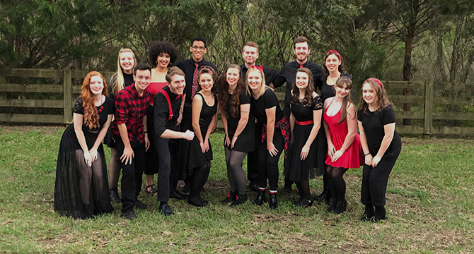

Our History

Formed in Fall 2008 as an all-female a cappella group, as of 2015 So Noted is now one of four co-ed groups at the University of Central Florida in Orlando. We are under the umbrella organization of Contemporary A Cappella at UCF. So Noted competes at the International Championship of Collegiate A Cappella, attends festivals, and performs on and off campus. We can speak for most a cappella groups in saying that we love what we do, and we are so thankful for the opportunity to be inspired by and to perform the music we love for audiences everywhere. We are so excited for our contemporary a cappella future and would love for you to be a part of it! Thanks for all of your love and support!